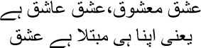
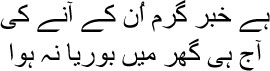
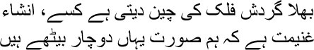

31
My heart is so bereft now that I cannot tell
Didn’t anyone ever live here? Or has it been deserted
for a long time now?
 he gambling session was in full swing in my devil’s chamber that day. We used to gamble with dice. Several rich businessmen were present. Luck was running my way, Manto bhai—I had won a number of games. One of Mir sahib’s shers was buzzing around in my head like a bee.
he gambling session was in full swing in my devil’s chamber that day. We used to gamble with dice. Several rich businessmen were present. Luck was running my way, Manto bhai—I had won a number of games. One of Mir sahib’s shers was buzzing around in my head like a bee.

Love is both the lover and the beloved
So love is its own affliction
Suddenly Kallu appeared to tell me that a palanquin had arrived. Several women were sitting in it. ‘Why are you telling me?’ I scolded him. ‘They must be here to visit Begum sahiba. Show them to the mahalsarai.’
A few minutes after Kallu left, several women dressed in burqas entered my chamber. We were taken aback. Who were they? When they took off their burqas, we discovered police chief Faizul Hasan, along with his troops. ‘Handcuff them all,’ roared Faizul Hasan.
Quietly I said, ‘Take a seat kotwal sahib. I am Mirza Ghalib. You know me, of course. These are my friends, all honest people of Shahjahanabad.’
— Which is why they gamble?
Smiling, I said, ‘When did you see us gambling? Is it a crime to play a game of dice?’
— I know there’s gambling behind these games, Mirza. You were arrested earlier as well. You have to come to the police station.
Gripping Faizul Hasan’s arm, Malik Ram said, ‘Do you believe that a poet like Mirza Ghalib will stoop to gambling?’
Faizul Hasan burst out laughing. ‘Do you think anyone will believe it if they’re told Mirza doesn’t gamble?’
— I do gamble, kotwal sahib. I said with a smile.
— There, you heard for yourself.
— But with life. Zindagi ke saath.
— You can’t get away with philosophical statements, Mirza. Turning to his troops, Faizul Hasan told them, ‘Handcuff them all.’
Now I became furious. Clenching my teeth, I said, ‘Don’t forget, kotwal sahib, that the British are my friends.’
— You can say all that in court.
I couldn’t believe it, Manto bhai. We were actually handcuffed and led through the streets of Shahjahanabad to the police station. Was this humiliation also due to me? Those who had been arrested along with me secured their freedom using either money or influence. I spent the night in custody.
The next day, Shaifta sahib came to meet me when he heard. Taking both my hands in his, he said, ‘Don’t worry, Mirza sahib. I will definitely have you released.’
— How?
— Let me see what I can do. I’ll try my best.
Shaifta sahib’s efforts did not help. I was taken to court. I could not fathom why police chief Faizul Hasan was suddenly angry with me. The new magistrate pretended ignorance. The magistrate was senior to the police chief, but during the trial he behaved as though the police chief was the last word. The sessions judge was a friend of mine; he used to share my company openly—but even he could not recognize me now. The sentence was a fine of two hundred rupees and jail with hard labour for six months. If I couldn’t pay the fine, the jail term would be increased. If I could pay another fifty rupees, I would not have to perform hard labour. The Dilli newspapers were full of this incident. Shaifta sahib appealed to the High Court. But the verdict and sentence were upheld. Shaifta sahib told me that there was uproar in Shahjahanabad over the case. The newspapers even said that an aristocratic, talented individual like me should not have been punished thus for a trivial transgression. Most important, Emperor Bahadur Shah— who did not like me, remember—sent a written request to the British to free me. His appeal was also rejected, Manto bhai.
I was preparing myself mentally. I had already been imprisoned in my own room year after year. What new punishment could the prison mete out to me now? But my heart was breaking in other ways. How could my family distance themselves this way when they heard I would have to go to jail? But then again, why not? After all, Mir sahib had been locked in his unlit cell by his own family. It was the behaviour of Aminuddin sahib, the nawab of Loharu, which surprised me the most. How friendly we used to be. And now he disowned me completely. His brother Ziauddin also moved away.
Allow me to weep a little, don’t chide me, my friend
A man must lighten the load in his heart sometimes
Shaifta sahib was the only one to stand by me. He shielded me like an angel. He paid the fine and all the expenses for the trial. He would visit me in prison virtually every day.
One day I asked him, ‘You’ve been on the Haj, you don’t drink anymore either. Why then do you visit an infidel like me?’
— God forbid! What are you saying, Mirza sahib?
— Everyone else has deserted me. Why do you still keep visiting?
— Mirza sahib, I have never considered how correct your ways are, or how closely you follow our Shariyat. To me you’re the only poet whom I can place on a pedestal next to Amir Khusrau. Mian Tansen’s notes and your ghazals mingle and become one for me.
— What are you saying! Mian Tansen is the light of the lord. Who am I in comparison? Do you remember the time he made it rain by singing at the fort? I picture that scene every night in bed in my devil’s chamber. All that was such a long time ago. Will those days ever return to this world?
— They do return.
— Where?
— That sher of yours …

I hear there’s a strong rumour of his arrival, Al-Musabbir. And yet, today of all days I don’t have a mat in my room.
— Don’t embarrass me so, Shaifta sahib.
— Do you suppose we don’t know that you drink and gamble, Mirza sahib? But shall I forsake you just because you’re in prison? You’re a poet—you can still do as you please with words—nothing is more important as far as I’m concerned.
Smiling, I said, ‘You’ve been on the Haj. The followers of the Shariyat will stone you to death if they hear you.’
— I will tell them, Muhammad went on a mi’iraj. During this ascension he visited both heaven and hell. Follow him, my brothers.
— You will have to be the lightning that illuminates the way for these people, Shaifta sahib.
— So be it. I can only take the path that Allah has decreed.
I realized that being in jail was not much worse than the prison of daily life, Manto bhai. Thieves, robbers, murderers, mad men—I got a chance to mingle with a variety of people. Each of them had a unique story and a unique way of speaking. Life in prison was like the rise and fall of notes on the piano and violin that I had heard in the Englishmen’s homes. Yes, I remember the word, harmony, I heard it from Fraser sahib for the first time. It was this harmony that I heard in prison. I wrote a nazm titled ‘Habsia’ while in jail. You can hear the harmony in it, Manto bhai.
Imprisoned here, I play on the strings of my poetry
The sad currents in my heart turn to music
I squeeze out song from my blood—I’m a prisoner
I throw open the invisible window
I make an inn for birds
Load me with labour as you please
The gift of your prison sentence,
But can you chain my voice
When lament turns into a cascade?
Don’t come here, old friends
Don’t ever knock on my door
I won’t be as easy to talk to now
Thieves are my companions
They acknowledge me as their lord
‘Don’t go outside,’ I tell them,
‘There’s no loyalty there.’
They come, the warden and guard
Since I’m here.
They open the door,
They know it’s me.
Raise cheers, my prison friends.
For I am here.
You will find your home in the poet’s words
Look, it’s me.
Friends have turned away
The family has withdrawn,
I reach out to you,
O stranger, imprisoned soul.
I was in prison for three months, my brothers; I grew friendly with all the convicts. Many of them wanted to listen to my shers. Only when I went to jail did I realize that virtually everyone loved ghazals. But their daily routine left them with no time. After sunset everyone used to gather around me; it was like a mushaira. Of course, I was the only poet present. One evening I composed a new sher for them:
A million desires are imprisoned for life here, Asad
This bleeding breast is nothing but a prison
— Mian … A low voice was heard. The chap who spent most of his time wrapped in a blanket was sitting up.
— Awake at last, Iqbal bhai? Someone asked.
— I never sleep, bhaijaan. I lie in utter darkness under my blanket, but still I cannot sleep. But mian—he looked at me directly—must your heart turn into a prison just because you are in jail?
The story of Iqbal’s imprisonment was a strange one, my brothers. He and his wife had no children though they had been married for several years. Then his wife became pregnant suddenly. Iqbal had a son. Two years after the boy was born, Iqbal learnt that the father was not him, but someone else in the family. Iqbal killed the boy and buried him. He could not sleep after this. One day he appeared at the police station on his own, confessed everything, and went to jail.
I saw Iqbal’s face for the first time. It was like a flower that had fallen to earth, with a few dried petals still in place. Suddenly he began to speak:

Oh, how long it had been since I’d heard a sher of Inshallah Khan Insha’s. There wasn’t another poet like Insha in Awadh. Consider the words, Manto bhai. The tornado of time spares no one, Godspeed, at least a few of us friends can still sit here chatting. What more can you ask for from life?
‘I had trusted some friends like these, Iqbal bhai,’ I said. ‘But they distanced themselves as soon as they heard about my imprisonment.’
— Why did you trust them? Can you possibly trust anyone but the lord? Listen to a story then, mian.
I thought of Kallu at once. The other inmates said in unison, ‘Let’s hear your story, Iqbal … tonight’s the night for famous tales.’ A wave of laughter erupted.
— Sikandar had a big secret in his life. One that he never disclosed to anyone.
— Sikandar? A combined cry rose in the air. ‘Fabulous, Iqbal bhai!’
‘A story about Sikandar in prison!’ one of the listeners exclaimed. ‘You can’t beat that, Iqbal bhai.’
‘Can anyone but Sikandar be in prison?’ I laughed.
— Excellent.
— So what was the secret, Iqbal bhai? I asked.
— Sikandar’s ears were enormous, like an elephant’s. No one knew this. He kept them hidden under a cap for fear that people would laugh. Only his ancient barber knew about his ears. Once, this barber became too ill to work. Someone who would not disclose the secret to anyone had to be found for the job. A young boy named Bilal used to work at the emperor’s court. The aged barber knew him; he picked Bilal to replace himself. Sikandar didn’t agree at first, but eventually he accepted the old barber’s suggestion. Bilal was appointed.
— And then? The listeners drew closer to Iqbal.
— The first time he had to cut Sikandar’s hair, Bilal almost fainted. Such enormous ears on a human being? The scissors slipped from his fingers in fear and surprise. Sikandar understood. Grimly, he said, ‘Keep what you’re seeing to yourself. If anyone else comes to know, I’ll rip your tongue out, and, needless to add, you will be beheaded.’ Bilal froze with fear at this. He constantly imagined his severed head rolling in the dust. What if the thing about the emperor’s ears slipped out somehow? He also knew that he would have no peace till he had told someone. He would be relieved only when the secret had been expelled from his mind. But he knew that if he told anyone he knew, it would be all over the city, and his severed head would soon be rolling in the dust.
— What did Bilal do?
— One day he stole out of the palace and went into a forest some distance away. There was a lake in the forest, where shepherds would bring their flocks for a drink. They would rest a little on its banks while the sheep drank. Spotting not a soul anywhere, Bilal told the lake loudly, ‘Oh my God, how big Emperor Sikandar’s ears are.’ He felt lighter at once, as though a boulder lodged in his heart for a long time had rolled off.
— Lies, all lies. Someone yelled.
— Idiot! Iqbal exclaimed. —When have stories ever been anything but lies? Our lives themselves are full of lies, and we ourselves created our stories.
— Ignore the bastard and tell us the story, Iqbal bhai. Someone else spoke loudly.
— Several months went by. Bilal wasn’t afraid anymore; Sikandar, too, was happy with his new barber. But something strange had taken place in the meantime. Some reeds had sprung up by the lake in the forest. One day a shepherd plucked a reed out of the soil, made a hole in it, and began to play it like a pipe. But he was flabbergasted by the sound that emerged. A voice seemed to be saying, ‘Oh my God, how big Emperor Sikandar’s ears are.’
— And then?
— As he was passing through the forest one day, Sikandar heard the sound from the pipe. Following the sound, he arrived at the shepherds’ camp, had the musician arrested and brought him to his court. When interrogated, the shepherd explained everything. ‘Impossible!’ roared the emperor. Now Sikandar sent for Bilal. Shaking with fear, Bilal said, ‘I didn’t tell anyone, huzoor. I only told the lake.’
— The lake? The emperor’s eyebrows shot up into his hair.
— I couldn’t keep it to myself, huzoor. Since I wasn’t allowed to tell anyone, I told the lake.
— And then?
— Sikandar ordered another reed to be plucked from the bank of the lake. The shepherd made a pipe with it. The same sound was heard, ‘Oh my God, how big Emperor Sikandar’s ears are.’ Sikandar was silent for some time. Then he told his soldiers, ‘Let the shepherd go.’ To Bilal he said in a disappointed tone, ‘You may still be my barber if you wish.’
— And then?
— Sikandar sent for the best calligraphist in town. He was ordered to write a few words in golden ink; Sikandar framed the words and put them up in his bedroom, so that he could read them first thing in the morning when he woke up every day.
— What were the words?
— Don’t trust anyone but yourself. Even lakes can be treacherous.
The listeners burst into laughter.
Looking at me, Iqbal asked, ‘What do you make of it, mian?’
— I’ve understood what you’re getting at. But this story has a hidden meaning too.
— What is it, mian?
— Even an emperor’s secrets cannot be kept. The lord discloses everything one day or another. All power becomes the object of laughter eventually, doesn’t it, Iqbal bhai?
— It does. I hadn’t thought of it this way.
— Everyone thinks according to their own proclivities. That’s why the game of life survives.
By the grace of the lord, I succeeded in converting the prison into a playground, Manto bhai. And after I got out of jail, fortune smiled on me for the first time. Only for a few years. But then that too was the bounty of life. You know what the bounty implies, Manto bhai? The lord gave as much as he wanted to, and I grabbed what I could with a roll of the dice. Only, the image of imminent death had already appeared in the mirror.